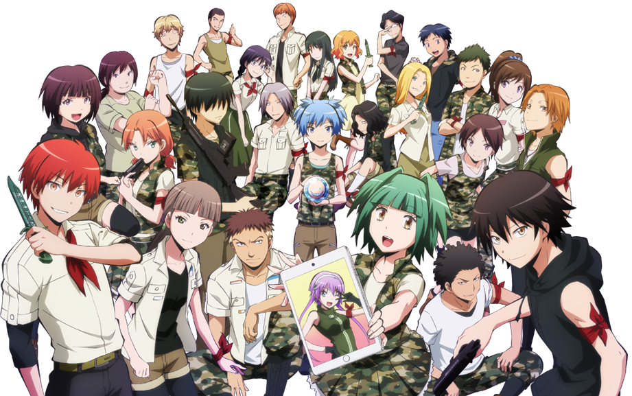

Assassination Classroom is a Japanese fiction manga series written and illustrated by Yūsei Matsui . The series is about the daily lives of an extremely powerful octupus‐like teacher Korosensei, and his students in Class 3E dedicated to the task of assassinating him at the end of the school year to prevent Earth from being destroyed by Korosensei, as he already destroyed 70% of the moon.
Assassination Classroom Wiki. (n.d.). Retrieved February 19, 2017, from http://ansatsukyoshitsu.wikia.com/wiki/Assassination_Classroom_Wiki [Digital image]. (n.d.). Retrieved from https://upload.wikimedia.org/wikipedia/commons/0/02/Assassination_Classroom_logo.png [Digital image]. (n.d.). Retrieved from http://vignette3.wikia.nocookie.net/fantendo/images/8/84/Assassination_Classroom_S1_Finale_key.png/revision/latest?cb=20150522161201 [Digital image]. (n.d.). Retrieved from https://images.alphacoders.com/748/thumb-1920-748354.png [Digital image]. (n.d.). Retrieved from http://vignette4.wikia.nocookie.net/assassinationclassroom/images/c/c5/Koro_sensei_transparent.png/revision/latest?cb=20161202043210 [Digital image]. (n.d.). Retrieved from https://ih1.redbubble.net/image.70216352.0452/sticker,375x360.u2.png [Digital image]. (n.d.). Retrieved from http://vignette2.wikia.nocookie.net/assassinationclassroom/images/b/b1/Nagisa_transparent.png/revision/latest?cb=20161202043354 [Digital image]. (n.d.). Retrieved from http://vignette1.wikia.nocookie.net/videogames-fanon/images/e/ee/Karma_knife.png/revision/latest?cb=20150623115414 [Digital image]. (n.d.). Retrieved from http://vignette1.wikia.nocookie.net/assassinationclassroom/images/5/5d/Kayano_Kaede_Transparent.png/revision/latest?cb=20161202043645 [Digital image]. (n.d.). Retrieved from http://vignette1.wikia.nocookie.net/assassinationclassroom/images/7/71/Karasuma_transparent.png/revision/latest?cb=20161202044306 [Digital image]. (n.d.). Retrieved from http://blog.alltheanime.com/wp-content/uploads/2016/06/assassination-classroom-s1-01.jpg [Digital image]. (n.d.). Retrieved from https://sqwabb.files.wordpress.com/2015/03/assassination-class-1st-day-anime.jpg [Digital image]. (n.d.). Retrieved from https://myanimelist.cdn-dena.com/images/anime/5/75639l.jpg [Digital image]. (n.d.). Retrieved from http://ptanime.com/wp-content/uploads/2015/10/Ansatsu-Kyoushitsu-Capas-Manga-Imagem-Destaque1-960x430.jpg [Digital image]. (n.d.). Retrieved from http://2.bp.blogspot.com/-aBoT_BmudYI/VhMOn7B6oOI/AAAAAAAAANM/XQGMG2T0rnI/s1600/assassination%2Bclassroom%2B6.jpg
Return to the top of the page